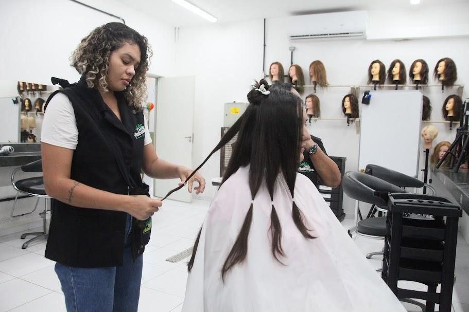

Bem-vindo ao nosso salão de beleza, onde sua beleza é nossa prioridade.
Bem-vindo ao Beleza Aê, onde a sua beleza é a nossa paixão! Localizado no coração de Recife, nosso salão é um refúgio de tranquilidade e estilo, dedicado a proporcionar uma experiência única de cuidado e bem-estar.
Desde a nossa inauguração, temos nos empenhado em oferecer serviços de alta qualidade, combinando técnicas modernas com um toque pessoal. Nossa equipe de profissionais altamente qualificados está sempre pronta para ouvir suas necessidades e transformar suas expectativas em realidade. Seja para um corte de cabelo, coloração, manicure, pedicure ou tratamentos estéticos, estamos aqui para realçar a sua beleza natural.
Acreditamos que cada cliente é único e merece um atendimento personalizado. Por isso, investimos constantemente em treinamento e atualização para garantir que você receba o melhor serviço possível. Nosso objetivo é fazer com que você se sinta especial e confiante, não apenas durante a sua visita, mas também ao sair do nosso salão.